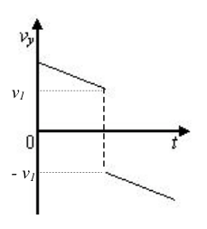
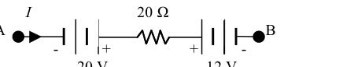
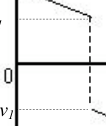
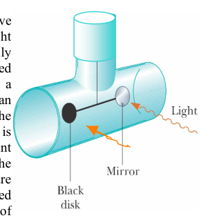
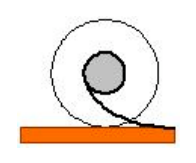
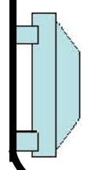
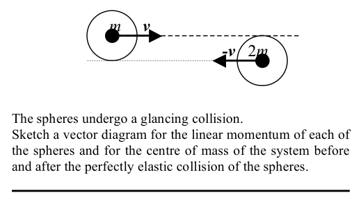
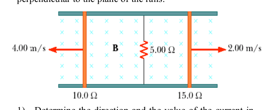
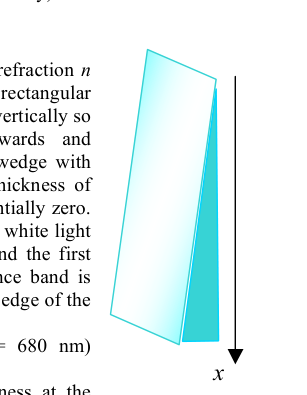

A book is placed on a chair. Then a videocassette is placed on the book. The floor exerts a normal force:
- A. on all three;
- B. only on the book;
- C. only on the chair;
- D. upwards on the chair and downwards on the book.
Topic: Newtonian Mechanics Metodi: Free-Body Diagram Competenze: Physical Reasoning Objects: Block Fonte: Testo (PDF) — p.2
Un libro viene messo su una sedia. Poi viene posta una videocassetta sul libro. Il pavimento esercita una forza normale:
- A. su tutti e tre;
- B. solo sul libro;
- C. solo sulla sedia;
- D. in su sulla sedia e in basso sul libro.
Topic: Newtonian Mechanics Metodi: Free-Body Diagram Competenze: Physical Reasoning Objects: Block Fonte: Testo (PDF) — p.2
The figure shows two point sources (A and B) of coherent mechanical waves of the same wavelength. Source B emits waves that are radians out of phase with the waves from source A. Source A is distant from P and source B is distant from P ( is the wavelength).
The phase difference between the waves arriving at P from A and B is
- A. rad
- B. rad
- C. rad
- D. rad
- E. rad

Two coherent sources A, B and point PTopic: Oscillations & Waves Metodi: Superposition Principle Competenze: Physical Reasoning Objects: — Fonte: Testo (PDF) — p.2
La figura mostra due fonti di punti (A e B) di onde meccaniche coerenti della stessa lunghezza d’onda. La fonte B emette onde di radiani fuori fase con le onde della fonte A. La fonte A è distante da P e la fonte B è distante da P ( è la lunghezza d’onda).
La differenza di fase tra le onde che arrivano a P da A e B è
- A. rad
- B. rad
- C. rad
- D. rad
- E. rad
Due fonti coerenti A, B e punto P
Topic: Oscillations & Waves Metodi: Superposition Principle Competenze: Physical Reasoning Objects: — Fonte: Testo (PDF) — p.2
What is the potential difference in the circuit segment below if the current A?
(The segment contains a resistor and two EMF sources of 20 V and 12 V with orientations as shown.)
- A. V
- B. V
- C. V
- D. V
- E. V

Circuit segment with resistor and two EMFsTopic: Circuits Metodi: Kirchhoff’s Laws Competenze: Physical Reasoning Objects: Resistor, Battery Fonte: Testo (PDF) — p.2
Qual è la differenza potenziale nel segmento del circuito di seguito se la corrente A?
(Il segmento contiene una resistenza e due fonti di EMF di 20 V e 12 V con orientamenti come mostrato.)
- A. V
- B. V
- C. V
- D. V
- E. V
segmento di circuito con resistore e due EMF
Topic: Circuits Metodi: Kirchhoff’s Laws Competenze: Physical Reasoning Objects: Resistor, Battery Fonte: Testo (PDF) — p.2
The graph on the right shows a velocity versus time graph for a ball. Which explanation best fits the motion of the ball as shown by the graph?
- A. The ball falls, is caught, and is thrown down with a greater velocity.
- B. The ball rises, hits the ceiling, and falls down.
- C. The ball falls, hits the floor, and bounces up.
- D. The ball rises, is caught, and then is thrown down.

Velocity vs time graph for a ballTopic: Newtonian Mechanics Metodi: Kinematic Equations Competenze: Diagrammatic Reasoning Objects: Ball Fonte: Testo (PDF) — p.2
Il grafico a destra mostra una velocità contro il grafico del tempo per una palla. Quale spiegazione si adatta meglio al movimento della palla come mostrato dal grafico?
- A. La palla cade, viene catturata e gettata giù con una velocità maggiore.
- B. La palla si alza, colpisce il soffitto e cade. La palla cade, colpisce il pavimento e rimbalza.
- D. La palla si alza, viene catturata e poi gettata giù.
Velocità vs grafico temporale per una palla
Topic: Newtonian Mechanics Metodi: Kinematic Equations Competenze: Diagrammatic Reasoning Objects: Ball Fonte: Testo (PDF) — p.2
A light bulb A is rated at 60 W and a light bulb B is rated at 100 W. Both are designed to operate at 110 V. Which statement is correct?
- A. The 60 W bulb has a greater resistance and greater current than the 100 W bulb.
- B. The 60 W bulb has a greater resistance and smaller current than the 100 W bulb.
- C. The 60 W bulb has a smaller resistance and smaller current than the 100 W bulb.
- D. The 60 W bulb has a smaller resistance and greater current than the 100 W bulb.
- E. We need to know the resistivities of the filaments to answer this question.
Topic: Circuits Metodi: Equivalent Circuit Reduction Competenze: Physical Reasoning Objects: — Fonte: Testo (PDF) — p.2
Una lampadina A è di 60 W e una lampadina B di 100 W. Entrambi sono progettati per funzionare a 110 V. Quale affermazione è corretta?
- A. La lampadina da 60 W ha una maggiore resistenza e una corrente maggiore rispetto alla lampadina da 100 W.
- B. La lampadina da 60 W ha una resistenza maggiore e una corrente inferiore rispetto alla lampadina da 100 W.
- C. La lampadina da 60 W ha una resistenza e una corrente minori rispetto alla lampadina da 100 W.
- D. La lampadina da 60 W ha una resistenza minore e una corrente maggiore rispetto alla lampadina da 100 W.
- E. Per rispondere a questa domanda occorre conoscere le resistenze dei filamenti.
Topic: Circuits Metodi: Equivalent Circuit Reduction Competenze: Physical Reasoning Objects: — Fonte: Testo (PDF) — p.2
When a light ray travels between any two points, the path it takes is the one that
- A. covers the greatest distance;
- B. avoids travel in more than one medium;
- C. covers the least distance;
- D. takes the least time;
- E. is the mean between the longest and the shortest paths.
Topic: Geometric Optics Metodi: Ray Tracing Competenze: Physical Reasoning Objects: — Fonte: Testo (PDF) — p.2
Quando un raggio di luce viaggia tra due punti, il percorso che prende è quello che
- A. copre la distanza più grande;
- B. evita il viaggio in più di un mezzo;
- C. copre la distanza minima;
- D. richiede il minor tempo;
- E. è la media tra i percorsi più lunghi e i più brevi.
Topic: Geometric Optics Metodi: Ray Tracing Competenze: Physical Reasoning Objects: — Fonte: Testo (PDF) — p.2
A fountain sends water to a height of 100 metres. What must be the pressurization (above atmospheric pressure) of the water system driving the fountain? ()
- A. 10.8 ATM;
- B. 9.80 ATM;
- C. 8.80 ATM;
- D. 1.00 ATM.
Topic: Fluid Mechanics Metodi: Bernoulli’s Equation, Hydrostatic Equilibrium Competenze: Physical Reasoning Objects: — Fonte: Testo (PDF) — p.2
Una fontana manda acqua ad un’altezza di 100 metri. Qual è la pressione (sopra la pressione atmosferica) del sistema idrico che guida la fontana? ()
- A. 10,8 ATM;
- B. 9,80 ATM;
- C. 8,80 ATM;
- D. 1,00 bancomat.
Topic: Fluid Mechanics Metodi: Bernoulli’s Equation, Hydrostatic Equilibrium Competenze: Physical Reasoning Objects: — Fonte: Testo (PDF) — p.2
A bead of mass , attached to a string, is pushed and starts to rotate in the vertical plane. Only the gravitational force influences the rotation of the bead. The difference between the tension of the string when the bead is at the lowest point () and when the bead is at the upper point () is:
- A. ;
- B. ;
- C. ;
- D. ;
- E. .
Topic: Newtonian Mechanics Metodi: Free-Body Diagram, Conservation of Energy Competenze: Physical Reasoning Objects: Ball, String Fonte: Testo (PDF) — p.3
Una mancia di massa , attaccata a una corda, viene spinta e inizia a ruotare nel piano verticale. Solo la forza gravitazionale influenza la rotazione della perla. La differenza tra la tensione della corda quando la mancia è al punto più basso () e quando la mancia è al punto superiore () è:
- A. ;
- B. ;
- C. ;
- D. ;
- E. .
Topic: Newtonian Mechanics Metodi: Free-Body Diagram, Conservation of Energy Competenze: Physical Reasoning Objects: Ball, String Fonte: Testo (PDF) — p.3
Two identical particles, each with a mass of 4.5 mg and charge of 30 nC, are moving directly toward each other with equal speeds of 4.0 m/s at the instant when the distance separating the two particles is equal to 25 cm. How far apart will they be from each other at the point of closest approach?
- A. 7.8 cm;
- B. 9.8 cm;
- C. 12 cm;
- D. 15 cm;
- E. 20 cm.
Topic: Electrostatics Metodi: Conservation of Energy, Coulomb’s Law Competenze: Mathematical Modeling Objects: Point Charge Fonte: Testo (PDF) — p.3
Due particelle identiche, ognuna di una massa di 4,5 mg e carica di 30 nC, si muovono direttamente l’una verso l’altra con velocità uguali di 4,0 m/s nel momento in cui la distanza tra le due particelle è pari a 25 cm. Quanto saranno distanti l’uno dall’altro al punto di avvicinamento più vicino?
- A. 7.8 cm;
- B. 9.8 cm;
- C. 12 cm;
- D. 15 cm;
- E. 20 cm.
Topic: Electrostatics Metodi: Conservation of Energy, Coulomb’s Law Competenze: Mathematical Modeling Objects: Point Charge Fonte: Testo (PDF) — p.3
A straight wire of length carries a current in the positive direction in a region where the magnetic field is uniform and specified by , , and , where is a constant. What is the magnitude of the magnetic force on the wire?
- A. ;
- B. ;
- C. ;
- D. ;
- E. .
Topic: Magnetism Metodi: Lorentz Force Analysis, Vector Decomposition Competenze: Mathematical Modeling Objects: Wire Fonte: Testo (PDF) — p.3
Un filo retto di lunghezza trasporta una corrente nella direzione positiva in una regione in cui il campo magnetico è uniforme e specificato da , e , dove è una costante. Qual è la grandezza della forza magnetica sul filo?
- A. ;
- B. ;
- C. ;
- D. ;
- E. .
Topic: Magnetism Metodi: Lorentz Force Analysis, Vector Decomposition Competenze: Mathematical Modeling Objects: Wire Fonte: Testo (PDF) — p.3
A spaceship of mass circles a planet of mass in a circular orbit of radius . How much energy is required to transfer the spaceship to a circular orbit of radius ?
- A. ;
- B. ;
- C. ;
- D. ;
- E. .
Topic: Gravitation Metodi: Conservation of Energy, Newton’s Law of Gravitation Competenze: Mathematical Modeling Objects: Satellite, Planet Fonte: Testo (PDF) — p.3
Una nave spaziale di massa circonda un pianeta di massa in un’orbita circolare di raggio . Quanto energia è necessaria per trasferire la nave spaziale in un’orbita circolare di raggio ?
- A. ;
- B. ;
- C. ;
- D. ;
- E. .
Topic: Gravitation Metodi: Conservation of Energy, Newton’s Law of Gravitation Competenze: Mathematical Modeling Objects: Satellite, Planet Fonte: Testo (PDF) — p.3
Three simple pendulums with strings of different lengths and bobs of different masses are pulled out from their position of equilibrium to angles of , , and , respectively. All angles , and are very small. The bobs are then released and start oscillating freely. Which answer better matches the results of measurements of the frequencies of the three pendulums?
- A. and ;
- B. and ;
- C. ;
- D. We need to know the mass of each bob to find the relationship between the frequencies;
- E. We need to know the length of each pendulum to find the relationship between the frequencies.
Topic: Oscillations & Waves Metodi: Simple Harmonic Motion Analysis, Small-Angle Approximation Competenze: Physical Reasoning Objects: Pendulum Fonte: Testo (PDF) — p.3
Tre penduli semplici con stringhe di lunghezza diversa e bobine di massa diversa vengono estratti dalla loro posizione di equilibrio ad angoli di , e , rispettivamente. Tutti gli angoli , e sono molto piccoli. I bobini vengono poi rilasciati e iniziano ad oscillarsi liberamente. Quale risposta corrisponde meglio ai risultati delle misurazioni delle frequenze dei tre penduli?
- A. e ;
- B. e ;
- C. ;
- D. Dobbiamo conoscere la massa di ciascun bob per trovare la relazione tra le frequenze;
- E. Dobbiamo conoscere la lunghezza di ciascun pendolo per trovare la relazione tra le frequenze.
Topic: Oscillations & Waves Metodi: Simple Harmonic Motion Analysis, Small-Angle Approximation Competenze: Physical Reasoning Objects: Pendulum Fonte: Testo (PDF) — p.3
The electric potential inside a charged solid spherical conductor in equilibrium:
- A. is always zero;
- B. decreases from its value at the surface to a value of zero at the centre;
- C. is constant and is equal to its value at the surface;
- D. increases from its value at the surface to a higher value at the centre.
Topic: Electrostatics Metodi: Gauss’s Law, Electric Potential Method Competenze: Physical Reasoning Objects: Conducting Sphere Fonte: Testo (PDF) — p.3
Potenziali elettrici all’interno di un conduttore solido sferico carico in equilibrio:
- A. è sempre zero;
- B. diminuisce dal suo valore alla superficie a un valore di zero al centro;
- C. è costante ed è uguale al suo valore a superficie;
- D. aumenta dal suo valore alla superficie a un valore più elevato al centro.
Topic: Electrostatics Metodi: Gauss’s Law, Electric Potential Method Competenze: Physical Reasoning Objects: Conducting Sphere Fonte: Testo (PDF) — p.3
For which process below will the internal energy of a system NOT change?
- A. An adiabatic expansion or compression of an ideal gas;
- B. An isothermal expansion or compression of an ideal gas;
- C. An isobaric expansion or compression of an ideal gas;
- D. The freezing of a quantity of a liquid at its melting point;
- E. The evaporation of a quantity of a liquid at its boiling point.
Topic: Thermodynamics Metodi: First Law of Thermodynamics, Ideal Gas Law Competenze: Physical Reasoning Objects: Gas Fonte: Testo (PDF) — p.3
Per quale processo di seguito l’energia interna di un sistema NON cambierà?
- A. Espansione o compressione adiabatica di un gas ideale;
- B. Espansione o compressione isotermico di un gas ideale;
- C. Espansione o compressione isobarica di un gas ideale;
- D. Il congelamento di una quantità di liquido al suo punto di fusione;
- E. L’evaporazione di una quantità di liquido al suo punto di ebollizione.
Topic: Thermodynamics Metodi: First Law of Thermodynamics, Ideal Gas Law Competenze: Physical Reasoning Objects: Gas Fonte: Testo (PDF) — p.3
A diver shines an underwater searchlight at the surface of a pond whose water has an index of refraction . At what angle of incidence relative to the surface will the light be totally reflected?
- A.
- B.
- C.
- D.
- E.
Topic: Geometric Optics Metodi: Snell’s Law Competenze: Mathematical Modeling Objects: — Fonte: Testo (PDF) — p.3
Un subacqueo illumina una luce subacquea sulla superficie di un stagno la cui acqua ha un indice di rifrazione . A quale angolo di incidenza rispetto alla superficie la luce sarà totalmente riflessa?
- A.
- B.
- C.
- D.
- E.
Topic: Geometric Optics Metodi: Snell’s Law Competenze: Mathematical Modeling Objects: — Fonte: Testo (PDF) — p.3
According to the Bohr model of the atom, an electron can undergo a transition from one orbit that is closer to the nucleus to another which is farther from the nucleus, by absorbing a photon whose energy depends on its frequency as , where is Planck’s constant. An energy of 13.6 eV is needed to ionize a hydrogen atom by ejecting an electron from the lowest energy level. What is the longest wavelength of a photon that can eject the electron from the lowest energy level of the atom?
- A. 40 nm;
- B. 60 nm;
- C. 70 nm;
- D. 80 nm;
- E. 90 nm.
Topic: Modern-Quantum Physics Metodi: Bohr Model & Quantization, Photon Energy Relation Competenze: Mathematical Modeling Objects: Photon, Electron, Atom Fonte: Testo (PDF) — p.3
Secondo il modello di Bohr dell’atomo, un elettrone può subire una transizione da un’orbita più vicina al nucleo ad un’altra più lontana dal nucleo, assorbendo un fotone la cui energia dipende dalla sua frequenza come , dove è la costante di Planck. È necessaria un’energia di 13,6 eV per ionizzare un atomo di idrogeno espellendo un elettrone dal livello energetico più basso. Qual è la lunghezza d’onda più lunga di un fotone che può espellere l’elettrone dal livello energetico più basso dell’atomo?
- A. 40 nm;
- B. 60 nm;
- C. 70 nm;
- D. 80 nm;
- E. 90 nm.
Topic: Modern-Quantum Physics Metodi: Bohr Model & Quantization, Photon Energy Relation Competenze: Mathematical Modeling Objects: Photon, Electron, Atom Fonte: Testo (PDF) — p.3
One reason why we know that magnetic fields are not the same as electric fields is because the force they exert on a charge is:
- A. in opposite directions in electric and magnetic fields if the charge is moving;
- B. parallel to the magnetic field and perpendicular to the electric field if the charge is moving;
- C. parallel to the electric field and perpendicular to the magnetic field if the charge is moving;
- D. zero in the electric field and nonzero in the magnetic field if the charge is not moving.
Topic: Electromagnetism, Magnetism Metodi: Lorentz Force Analysis Competenze: Physical Reasoning Objects: Point Charge Fonte: Testo (PDF) — p.3
Una delle ragioni per cui sappiamo che i campi magnetici non sono gli stessi dei campi elettrici è perché la forza che esercitano su una carica è:
- A. in direzioni opposte nei campi elettrici e magnetici se la carica si muove;
- B. parallelo al campo magnetico e perpendicolare al campo elettrico se la carica si muove;
- C. parallelo al campo elettrico e perpendicolare al campo magnetico se la carica si muove;
- D. zero nel campo elettrico e non zero nel campo magnetico se la carica non si muove.
Topic: Electromagnetism, Magnetism Metodi: Lorentz Force Analysis Competenze: Physical Reasoning Objects: Point Charge Fonte: Testo (PDF) — p.3
In an experiment to prove the existence of the light pressure, two vertically oriented disks are attached as shown to the ends of a horizontal beam in an evacuated tube. The horizontal beam is suspended at its central point by a vertical wire. The surfaces of the disks are simultaneously illuminated by a parallel beam of light of high intensity. (One disk surface is a mirror; the other is black.)
Which explanation best fits the behaviour of the two-disk system?
- A. The horizontal beam is displaced from its equilibrium position due to the equal light pressure on both discs.
- B. The horizontal beam rotates around the vertical wire with the mirror moving in the direction of light propagation and the black disk moving in the opposite direction.
- C. The horizontal beam rotates around the vertical wire with the black disk moving in the direction of light propagation and the mirror moving in the opposite direction.
- D. The experiment cannot show the existence of light pressure because light has no mass.

Light pressure apparatus with mirror and black diskTopic: Modern-Quantum Physics, Electromagnetism Metodi: Physical Modeling Competenze: Physical Reasoning Objects: Disk, Beam, Wire, Mirror Fonte: Testo (PDF) — p.4
In un esperimento per dimostrare l’esistenza della pressione luminosa, due dischi orientati verticalmente sono attaccati alle estremità di un fascio orizzontale in un tubo evacuato. Il fascio orizzontale è sospeso al suo punto centrale da un filo verticale. Le superfici dei dischi sono illuminate contemporaneamente da un fascio di luce parallelo di alta intensità. (Una superficie del disco è uno specchio; l’altra è nera.)
Quale spiegazione si adatta meglio al comportamento del sistema a due dischi?
- A. Il fascio orizzontale è spostato dalla sua posizione di equilibrio a causa della stessa pressione luminosa su entrambi i dischi.
- B. Il fascio orizzontale ruota intorno al filo verticale con lo specchio in movimento nella direzione della propagazione della luce e il disco nero in movimento nella direzione opposta.
- C. Il fascio orizzontale ruota intorno al filo verticale con il disco nero in movimento nella direzione della propagazione della luce e lo specchio in direzione opposta.
- D. L’esperimento non può dimostrare l’esistenza di pressione luminosa perché la luce non ha massa.
Apparecchi a pressione leggera con specchio e disco nero
Topic: Modern-Quantum Physics, Electromagnetism Metodi: Physical Modeling Competenze: Physical Reasoning Objects: Disk, Beam, Wire, Mirror Fonte: Testo (PDF) — p.4
You are shown a photo of a car driven on a vertical inside wall of a huge cylinder with a radius of 50 m. The coefficient of static friction between the car tires and the cylinder is . The minimum speed, at which the car can be driven like that, is:
- A. 20 km/h;
- B. 70 km/h;
- C. 90 km/h;
- D. 120 km/h.

Car on vertical inside wall of cylinderTopic: Newtonian Mechanics Metodi: Free-Body Diagram, Kinematic Equations Competenze: Mathematical Modeling Objects: Cylinder Fonte: Testo (PDF) — p.4
Vi viene mostrata una foto di un’auto guidata su una parete interna verticale di un enorme cilindro con un raggio di 50 metri. Il coefficiente di attrito statico tra le gomme dell’auto e il cilindro è . La velocità minima a cui la macchina può essere guidata in questo modo è:
- A. 20 km/h;
- B. 70 km/h;
- C. 90 km/h;
- D. 120 km/h.
Cara su parete verticali interne del cilindro
Topic: Newtonian Mechanics Metodi: Free-Body Diagram, Kinematic Equations Competenze: Mathematical Modeling Objects: Cylinder Fonte: Testo (PDF) — p.4
An emf may be induced in
- A. a piece of linear wire when it moves in a uniform static magnetic field;
- B. a closed loop of wire moving with a fixed orientation at a constant velocity in a non-uniform static magnetic field;
- C. a closed loop of wire moving with a fixed orientation and accelerating in a uniform static magnetic field;
- D. the cases described in (A) and (B) only;
- E. the cases described in (B) and (C) only.
Topic: Electromagnetic Induction Metodi: Faraday’s Law of Induction, Lenz’s Law Competenze: Physical Reasoning Objects: Wire Fonte: Testo (PDF) — p.4
Un’emf può essere indotta in
- A. un pezzo di filo lineare quando si muove in un campo magnetico statico uniforme;
- B. un circuito chiuso di filo in movimento con un orientamento fisso a velocità costante in un campo magnetico statico non uniforme;
- C. un circuito chiuso di fili che si muove con un orientamento fisso e si accelera in un campo magnetico statico uniforme;
- D. solo i casi descritti nelle lettere A) e B;
- E. solo i casi descritti nelle lettere B) e C).
Topic: Electromagnetic Induction Metodi: Faraday’s Law of Induction, Lenz’s Law Competenze: Physical Reasoning Objects: Wire Fonte: Testo (PDF) — p.4
Two identical dielectric balls supported by insulating threads hang side by side, touching each other. The two balls are initially electrically neutral.
Sketch the position of the balls on their threads after one of the balls is positively charged and the other stays neutral. Sketch the electric field lines near the balls.
Topic: Electrostatics Metodi: Coulomb’s Law, Symmetry Argument Competenze: Diagrammatic Reasoning Objects: Ball, String Fonte: Testo (PDF) — p.4
Due identiche palle dielettriche supportate da fili isolanti si appoggiano fianco a fianco, toccandosi. Le due palle sono inizialmente elettricamente neutre.
Segnare la posizione delle palle sui fili dopo che una delle palle è carica positivamente e l’altra rimane neutrale. Segna le linee di campo elettrico vicino alle palle.
Topic: Electrostatics Metodi: Coulomb’s Law, Symmetry Argument Competenze: Diagrammatic Reasoning Objects: Ball, String Fonte: Testo (PDF) — p.4
A 71-kg man stands on a spring scale in an elevator. Starting from rest, the elevator ascends, attaining its maximum speed of 1.2 m/s in 0.80 s. It travels with this constant speed for the next 2.0 seconds. The elevator then undergoes a uniform deceleration downwards (in the negative direction) for 1.9 s and comes to rest.
Draw a diagram for the reading of the scale versus time during the motion of the elevator.
Topic: Newtonian Mechanics Metodi: Free-Body Diagram, Kinematic Equations Competenze: Diagrammatic Reasoning, Mathematical Modeling Objects: Spring Fonte: Testo (PDF) — p.4
Un uomo di 71 kg è in piedi su una scala di primavera in un ascensore. A partire dal riposo, l’ascensore sale, raggiungendo la sua velocità massima di 1,2 m/s in 0,80 s. Viaggia con questa velocità costante per i prossimi 2,0 secondi. L’ascensore subisce quindi una decelerazione uniforme verso il basso (in direzione negativa ) per 1,9 secondi e si ferma.
Disegnare un diagramma per la lettura della scala contro il tempo durante il movimento dell’ascensore.
Topic: Newtonian Mechanics Metodi: Free-Body Diagram, Kinematic Equations Competenze: Diagrammatic Reasoning, Mathematical Modeling Objects: Spring Fonte: Testo (PDF) — p.4
A spool of thread on a horizontal surface may roll without slipping if someone pulls it by the free end of the thread. The spool may roll toward or away from the person who pulls the free end of the thread depending on the direction of the applied force.
Sketch a side-view diagram of the spool of thread on the horizontal surface which shows the direction of the force applied to the free end of the thread in such a way that this force does not cause the rolling of the spool in either direction. The force belongs to the plane of the drawing.

Spool of thread on horizontal surfaceTopic: Rotational Dynamics, Rigid Body Statics Metodi: Torque & Angular Momentum Analysis, Free-Body Diagram Competenze: Diagrammatic Reasoning Objects: String Fonte: Testo (PDF) — p.4
Un bobino di filo su una superficie orizzontale può rotolare senza scivolare se qualcuno lo tira dall’estremità libera del filo. Il spool può ruotare verso o lontano dalla persona che tira l’estremità libera del filo a seconda della direzione della forza applicata.
Segnare un diagramma laterale del bobino del filo sulla superficie orizzontale che indichi la direzione della forza applicata alla fine libera del filo in modo tale che questa forza non provochi il rotolamento del bobino in nessuna delle direzioni. La forza appartiene al piano del disegno.
Spool di filo su superficie orizzontale
Topic: Rotational Dynamics, Rigid Body Statics Metodi: Torque & Angular Momentum Analysis, Free-Body Diagram Competenze: Diagrammatic Reasoning Objects: String Fonte: Testo (PDF) — p.4
Consider the motion of a mass attached to a spring.
Sketch the following two graphs one below the other using the same scale for the time axis (in units of period):
- Displacement of the mass versus time;
- Kinetic energy of the mass versus time.
Topic: Oscillations & Waves Metodi: Simple Harmonic Motion Analysis Competenze: Diagrammatic Reasoning Objects: Spring, Block Fonte: Testo (PDF) — p.4
Considerate il movimento di una massa attaccata a una sorgente.
Segnare i due grafici seguenti, uno sotto l’altro, utilizzando la stessa scala per l’asse temporale (in unità di periodo):
- spostamento della massa rispetto al tempo;
- Energia cinetica della massa contro il tempo.
Topic: Oscillations & Waves Metodi: Simple Harmonic Motion Analysis Competenze: Diagrammatic Reasoning Objects: Spring, Block Fonte: Testo (PDF) — p.4
A system consists of two ideal spheres with equal diameters that move toward each other as shown. The spheres undergo a glancing collision.
Sketch a vector diagram for the linear momentum of each of the spheres and for the centre of mass of the system before and after the perfectly elastic collision of the spheres.
(One sphere has mass moving with velocity ; the other has mass moving with velocity .)

Two spheres m,v and 2m,-v before collisionTopic: Newtonian Mechanics, Conservation of Momentum Metodi: Conservation of Momentum, Conservation of Energy Competenze: Diagrammatic Reasoning Objects: Sphere Fonte: Testo (PDF) — p.4
Un sistema consiste di due sfere ideali di diametro uguale che si muovono l’una verso l’altra come mostrato. Le sfere subiscono una collisione di sguardo.
Segnare un diagramma vettoriale per il momento lineare di ciascuna delle sfere e per il centro di massa del sistema prima e dopo la collisione perfettamente elastica delle sfere.
(Una sfera ha massa in movimento con velocità ; l’altra ha massa in movimento con velocità .)
Due sfere m,v e 2m-,v prima della collisione
Topic: Newtonian Mechanics, Conservation of Momentum Metodi: Conservation of Momentum, Conservation of Energy Competenze: Diagrammatic Reasoning Objects: Sphere Fonte: Testo (PDF) — p.4
A student working in a laboratory has to remove a heavy box with new equipment from its initial position on the floor to the opposite wall of the room, which is metres away. She may choose: either to pick up the box, to carry it in her hands across the room, and then to drop it on the floor in the new place; or to attach a rope to one of the corners of the box and pull the box along the floor to the new place. The mass of the box and its contents is printed on the package. Acceleration due to gravity , the coefficients of static and kinetic friction and for the box material and the floor, and other constants are available to the student in a handbook. After performing some calculations, the student notes that and chooses the second method.
- What physical quantities should the student compare to choose the proper method of moving the heavy box?
- What parameter related to a quantity above shows an advantage for one of the two methods? Estimate this parameter for the two methods.
- Draw a free-body diagram (i.e. a vector diagram) for the chosen method of pulling the box with the attached rope along the horizontal floor.
- Dragging the box may be easier or harder. Express the condition that makes dragging easiest in terms of physics. Identify the parameter responsible for this condition using your free-body diagram.
- Using the parameter found, give a numerical condition for the easiest way of moving the box by the student.
Topic: Newtonian Mechanics Metodi: Free-Body Diagram, Conservation of Energy Competenze: Physical Reasoning, Mathematical Modeling Objects: Block, String Fonte: Testo (PDF) — p.5
Uno studente che lavora in un laboratorio deve rimuovere una scatola pesante con nuove attrezzature dalla sua posizione iniziale sul pavimento alla parete opposta della stanza, che si trova a metri di distanza. Può scegliere: o raccogliere la scatola, portarla nelle mani attraverso la stanza, e poi lasciarla cadere sul pavimento nel nuovo luogo; o attaccare una corda ad uno degli angoli della scatola e tirare la scatola lungo il pavimento al nuovo luogo. La massa della scatola e il suo contenuto sono stampati sulla confezione. L’accelerazione dovuta alla gravità , i coefficienti di attrito statico e cinetico e per il materiale della scatola e il pavimento, e altre costanti sono disponibili allo studente in un manuale. Dopo aver effettuato alcuni calcoli, lo studente nota che e sceglie il secondo metodo.
- Quali quantità fisiche dovrebbe confrontare lo studente per scegliere il metodo giusto per spostare la scatola pesante?
- Quale parametro relativo a una quantità di cui sopra mostra un vantaggio per uno dei due metodi? Estimare questo parametro per i due metodi.
- Disegnare un diagramma del corpo libero (cioè: un diagramma vettoriale) per il metodo scelto di tirare la scatola con la corda attaccata lungo il pavimento orizzontale.
- Trascinare la scatola può essere più facile o più difficile. Esprimi la condizione che rende il tragitto più facile in termini di fisica. Identifica il parametro responsabile di questa condizione utilizzando il tuo diagramma di corpo libero.
- Usando il parametro trovato, indicare una condizione numerica per il modo più semplice per il movimento della scatola da parte dello studente.
Topic: Newtonian Mechanics Metodi: Free-Body Diagram, Conservation of Energy Competenze: Physical Reasoning, Mathematical Modeling Objects: Block, String Fonte: Testo (PDF) — p.5
Two parallel rails with negligible resistance are 10.0 cm apart and are connected by a resistor. The circuit also contains two metal rods having resistances of and sliding along the rails as shown in the figure. The rods are pulled away from the resistor at constant speeds of 4.00 m/s and 2.00 m/s, respectively. A uniform magnetic field of magnitude 0.0100 T is applied perpendicular to the plane of the rails.
- Determine the direction and the value of the current in the resistor.
- Find the forces applied to the and the rods.
- What is the force applied to the segment of the circuit with the resistor?
- If the segment with the rod could slide along the rails and was released at a given time, how would this segment move (qualitatively)?

Two rods sliding on parallel rails with resistorTopic: Electromagnetic Induction, Circuits Metodi: Faraday’s Law of Induction, Kirchhoff’s Laws, Lorentz Force Analysis Competenze: Mathematical Modeling, Physical Reasoning Objects: Resistor, Rod, Wire Fonte: Testo (PDF) — p.5
Due binari paralleli con una resistenza trascurabile sono separati di 10,0 cm e sono collegati da una resistenza . Il circuito contiene anche due barre di metallo con resistenze e che scivolano lungo le rotaie come mostrato nella figura. Le barre sono allontanate dalla resistenza a velocità costanti rispettivamente di 4,00 m/s e 2,00 m/s. Un campo magnetico uniforme di magnitudo 0,0100 T viene applicato perpendicolare al piano dei binari.
- Determinare la direzione e il valore della corrente nella resistenza .
- Trova le forze applicate alle barre e .
- Qual è la forza applicata al segmento del circuito con la resistenza ?
- Se il segmento con la barra potesse scivolare lungo le rotaie e venisse rilasciato in un determinato momento, come si muoverebbe questo segmento (qualitativamente)?
Due barre che scivolano su binari paralleli con resistenza
Topic: Electromagnetic Induction, Circuits Metodi: Faraday’s Law of Induction, Kirchhoff’s Laws, Lorentz Force Analysis Competenze: Mathematical Modeling, Physical Reasoning Objects: Resistor, Rod, Wire Fonte: Testo (PDF) — p.5
A soap film with an index of refraction is contained within a rectangular wire frame. The frame is held vertically so that the film drains downwards and approximates the shape of a wedge with flat faces near the top. The thickness of the film at the very top is essentially zero. The film is viewed in reflected white light with near-normal incidence, and the first violet ( nm) interference band is observed 3.00 cm from the top edge of the film.
- Locate the first red ( nm) interference band.
- Determine the film thickness at the positions of the first violet and the first red bands.
- What is the wedge angle of the film?

Soap film wedge in wire frameTopic: Wave Optics Metodi: Interference & Diffraction Analysis, Thin Lens & Mirror Equation Competenze: Mathematical Modeling, Physical Reasoning Objects: Membrane Fonte: Testo (PDF) — p.5
Un film di sapone con un indice di rifrazione è contenuto in un telaio di filo rettangolare. Il telaio è tenuto verticalmente in modo che il film si dreni verso il basso e si avvicini alla forma di un cuneo con facce piatte vicino alla parte superiore. Lo spessore del film in cima è essenzialmente zero. Il film è visto in luce bianca riflessa con incidenza quasi normale, e la prima banda di interferenza viola ( nm) è osservata a 3,00 cm dalla borda superiore del film.
- Indicare la prima banda di interferenza rossa ( nm).
- Determina lo spessore del film nelle posizioni delle prime bande viola e delle prime bande rosse.
- Qual è l’angolo di ciglia del film?
Cinche di pellicola di sapone in telaio di filo
Topic: Wave Optics Metodi: Interference & Diffraction Analysis, Thin Lens & Mirror Equation Competenze: Mathematical Modeling, Physical Reasoning Objects: Membrane Fonte: Testo (PDF) — p.5